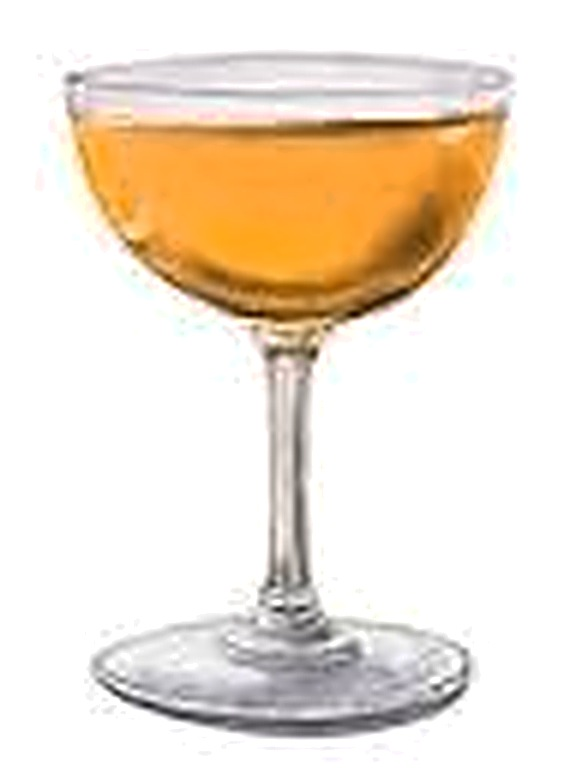
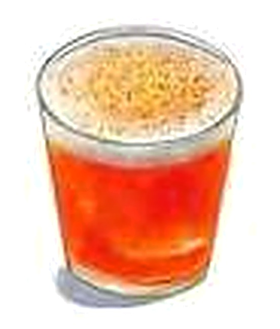
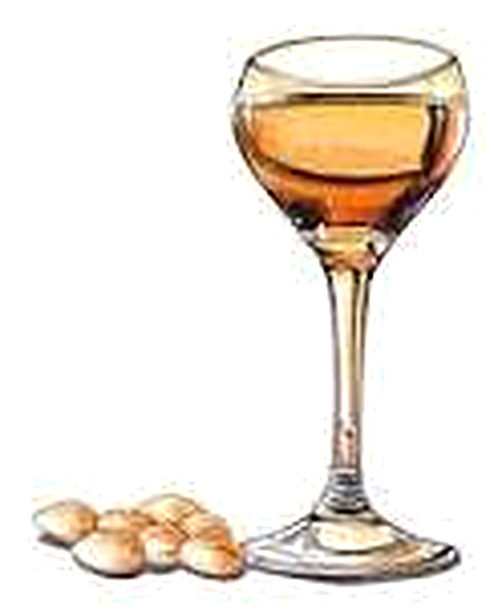

Tequila reposado, citrus liqueur, lime juice & cayenne pepper liqueur

Campari, gin, citrus liqueur, passionfruit & lime juice

Vodka, almond paste, pineapple juice, lime juice, cayenne pepper & sea salt